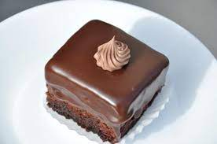

Amandine
Home

Ingredients
The sponge
- 5 eggs
- 1 cup of sugar
- 1 cup of sifted flour
- 4 tablespoons of sifted cocoa powder
- 2 teaspoons of baking powder
- 1 pinch of salt
- 1 teaspoon of vanilla
For the syrup
- 1 cup of water
- 1 cup of your favorite coffee
- ½ cup of sugar
- 2 tablespoons of rum essence (you can substitute with vanilla essence)
For the cream
- 2 cups (4 sticks) of butter at room temperature
- 1 cup of confectioner sugar
- 3 tablespoons of cocoa powder
- 1 tablespoon of rum essence
For the icing
- 1 bar of sweet baking chocolate
- 1 tablespoon of olive oil
- 2 tablespoons of heavy whipping cream
Instructions
The sponge
- Put the eggs in a mixer bowl and mix at first slow speed then at increasingly higher speed
- Add the sugar slowly, one tablespoon at the time and mix well until the mixture becomes frothy and creamy and the color becomes pale yellow
- Add vanilla to the egg mixture, mix well
- In a separate bowl add the flour, powder cocoa, baking powder, salt, mix well to homogenize the ingredients
- Incorporate the solid ingredients mixture into the egg mixture by adding two tablespoons of the solid ingredient mixture over the egg mixture and mixing well after each addition until all ingredients are incorporated
- Spray with cooking oil and line a 11 x 7 x 2 baking pan with parchment paper
- Pour the mixture into the baking pan and level out with a spatula
- Bake for 30 minutes at 375F or until then sponge passes the toothpick test
- Remove from oven, allow to cool for at least 30 minutes
The syrup
- Place all the ingredients in a In a sauce pan on low heat and bring to a boil
- Remove form heat and allow to cool
The chocolate cream
- In a large bowl add the butter, sugar, cocoa and rum essence, mix until the cocoa is incorporated. Put the mixture in a mixer bowl and mix well at high speed until allingredients are homogenized and a creamy mixture has been obtained, set aside, save two tablespoons of the cream for decoration
The icing
- The icing will be prepared right before need or after the assembled cake has been cooled in the fridge and it is ready for decoration, read the instructions below for cake assembly.
- On a Bain Marie bowl add the chocolate and the oil, melt it slowly, add the heavy whipping cream, mix well until the chocalote is melted and a creamy melt chocolate has been developed
Assembly of the cake
- Remove the sponge cake from the baking pan on a flat surface and with a sharp wide knife slice the sponge in two equal sections
- In the baking pan place a plastic sheet and put the bottom half of the sponge on it
- Using a tablespoon spread half of the syrup evenly on all of the sponge surface
- Fill the sponge with the chocolate cream prepared earlier, spreading it evenly on the sponge surface (remember to save two table spoons of it for decoration)
- Take the other half of the sponge and place it on top of the cream
- Using a brush spread the remaining syrup evenly on the top of the sponge
- Cover the cake with the plastic and put in the fridge for two hours until the cream gets harder
- Remove from the fridge after two hours and place on a cutting board
- With a sharp knife remove the edges and then cut in squares
- Using a tablespoon, cover each square with the chocolate icing
- Decorate with the saved chocolate cream
- Place in the fridge for two hours. Enjoy!